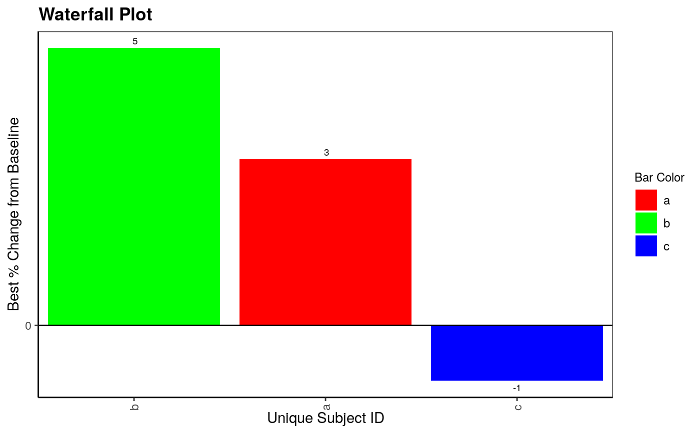
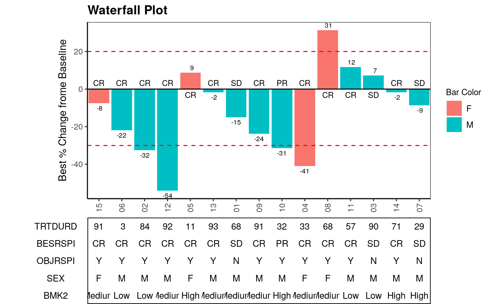
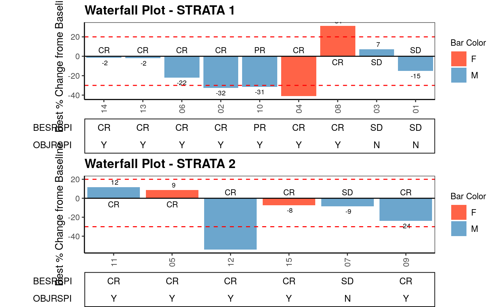
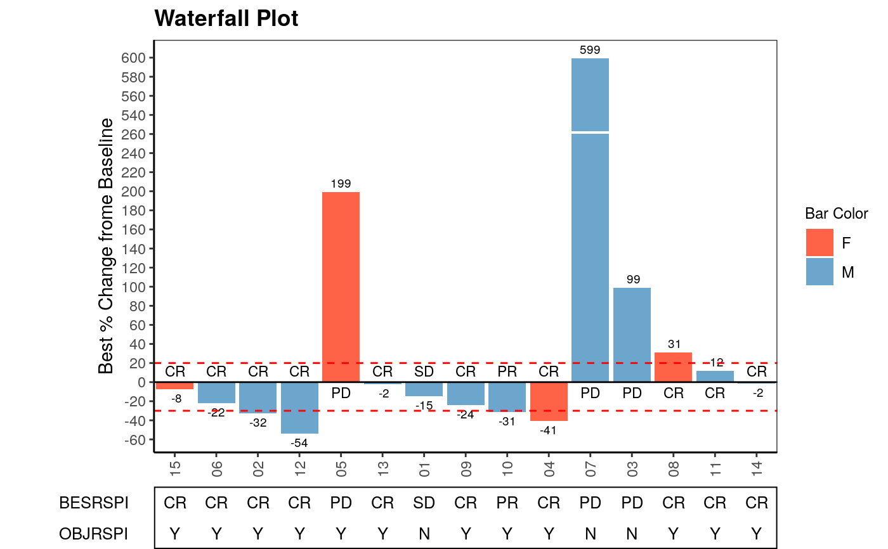

g_waterfall.RdWaterfall plot is often used in Early Development (ED) to present each individual patient’s best response to a particular drug based on a parameter.
g_waterfall( bar_id, bar_height, sort_by = NULL, col_by = NULL, bar_color_opt = NULL, anno_txt = NULL, href_line = NULL, facet_by = NULL, show_datavalue = TRUE, add_label = NULL, gap_point = NULL, ytick_at = 20, y_label = "Best % Change from Baseline", title = "Waterfall Plot" )
| bar_id | vector of IDs to identify each bar |
|---|---|
| bar_height | numeric vector to be plotted as height of each bar |
| sort_by | vector to sort bars, default is |
| col_by | vector to color bars, default is |
| bar_color_opt | aesthetic values to map color values (named vector to map color values to each name).
If not |
| anno_txt | dataframe of subject-level variables to be displayed as annotation below the waterfall plot,
default is |
| href_line | numeric vector to plot horizontal reference lines, default is |
| facet_by | a vector to facet plot and annotation table, default is |
| show_datavalue | boolean of whether value of bar height is shown, default is |
| add_label | vector of one subject-level variable to be added to each bar except for bar_height,
default is |
| gap_point | singular numeric value for adding bar break when some bars are significantly higher than
others, default is |
| ytick_at | optional bar height axis interval, default is 20 |
| y_label | label for bar height axis, default is "Best % Change from Baseline" |
| title | string to be displayed as plot title, default is "Waterfall Plot" |
plot object
library(tidyr)#> #>#> #> #>library(dplyr) g_waterfall( bar_id = letters[1:3], bar_height = c(3, 5, -1), bar_color_opt = c("red", "green", "blue") )# Example 1 ADSL <- rADSL[1:15,] ADRS <- rADRS %>% filter(USUBJID %in% ADSL$USUBJID) ADTR <- rADTR%>% filter(USUBJID %in% ADSL$USUBJID) %>% select(USUBJID, PCHG) %>% group_by(USUBJID) %>% slice(which.min(PCHG)) TR_SL <- ADSL %>% inner_join(ADTR, "USUBJID")#> Warning: Column `USUBJID` has different attributes on LHS and RHS of joinSUB_ADRS <- ADRS %>% filter(PARAMCD == "BESRSPI" | PARAMCD == "OBJRSPI") %>% select(USUBJID, PARAMCD, AVALC, AVISIT, ADY) %>% spread(PARAMCD, AVALC) ANL <- TR_SL %>% left_join(SUB_ADRS,"USUBJID") anno_txt_vars <- c("TRTDURD", "BESRSPI", "OBJRSPI", "SEX", "BMK2") g_waterfall( bar_height = ANL$PCHG, bar_id = sub(".*-", "", ANL$USUBJID), col_by = ANL$SEX, sort_by = ANL$ARM, # bar_color_opt = c("F" = "red", "M" = "green", "U" = "blue"), anno_txt = ANL[, anno_txt_vars], facet_by = NULL, href_line = c(-30, 20), add_label = ANL$BESRSPI, ytick_at = 20, gap_point = NULL, show_datavalue = TRUE, y_label = "Best % Change frome Baseline", title = "Waterfall Plot" )# Example 2 facetting anno_txt_vars <- c("BESRSPI", "OBJRSPI") g_waterfall( bar_id = sub(".*-", "", ANL$USUBJID), bar_height = ANL$PCHG, sort_by = ANL$COUNTRY, col_by = ANL$SEX, bar_color_opt = c("F" = "tomato", "M" = "skyblue3", "U" = "darkgreen"), anno_txt = ANL[, anno_txt_vars], facet_by = ANL$STRATA2, href_line = c(-30, 20), add_label = ANL$BESRSPI, ytick_at = 20, gap_point = 260, y_label = "Best % Change frome Baseline", title = "Waterfall Plot" )# Example 3 extreme value ANL$PCHG[3] <- 99 ANL$PCHG[5] <- 199 ANL$PCHG[7] <- 599 ANL$BESRSPI[3] <- "PD" ANL$BESRSPI[5] <- "PD" ANL$BESRSPI[7] <- "PD" g_waterfall( bar_id = sub(".*-", "", ANL$USUBJID), bar_height = ANL$PCHG, sort_by = ANL$ARM, col_by = ANL$SEX, bar_color_opt = c("F" = "tomato", "M" = "skyblue3", "U" = "darkgreen"), anno_txt = ANL[, anno_txt_vars], facet_by = NULL, href_line = c(-30, 20), add_label = ANL$BESRSPI, ytick_at = 20, gap_point = 260, y_label = "Best % Change frome Baseline", title = "Waterfall Plot" )